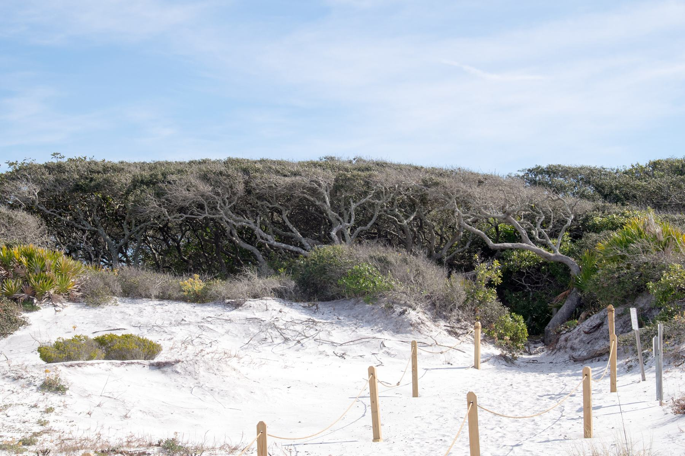

The eastern 30A dune lake.
Camp Creek Lake
Lake 14 of 15, west to east · WaterSound / Camp Creek
Grayton Beach State Park. Photo by Paul and Jill, CC BY 2.0, via Wikimedia Commons.
{kind=link}
About
Camp Creek Lake covers about 63 acres in the WaterSound and Camp Creek area. It is the eastern dune lake of the 30A communities, before the chain ends at the much larger Lake Powell on the Walton County line with Bay County.
Public reach is by an easement off Camp Creek Road North, not by a large state-park shore. The lake is a mid-sized basin near the east end of the named chain, still in the same family of water: a dune lake with an intermittent relationship to the Gulf.
Public access
The public access described here is an easement off Camp Creek Road North. It is not presented as a state-park shore. Confirm the easement on the ground; this page does not map its limits.
Access rules, park fees, and reservation systems change. This page is a summary for orientation, not a permit or a promise that a shore is open.